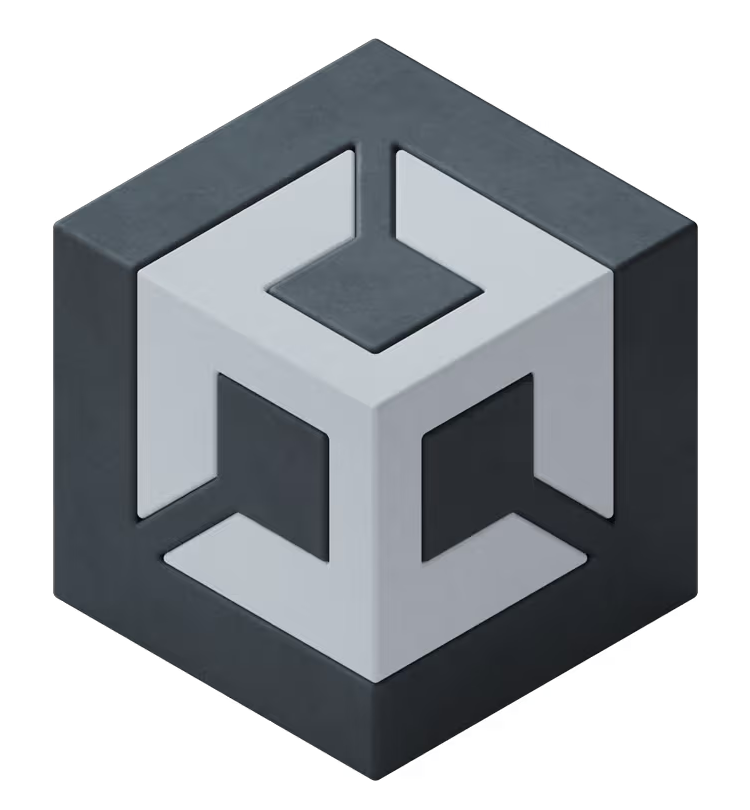

Motores de Juego
Importancia del Motor de Juego
El motor de juego es el núcleo tecnológico de cualquier videojuego. Se encarga de renderizado gráfico, físicas, animaciones, entrada de usuario, audio y exportación multiplataforma. Elegir el motor correcto define el tipo de proyectos que podrás desarrollar con mayor eficiencia.

Unreal Engine
Especializado en gráficos AAA con renderizado avanzado. Incluye sistemas como Nanite y Lumen para iluminación dinámica.
Sitio oficial

Unity
Versátil y ampliamente utilizado en móviles, VR e indies. Gran ecosistema de assets y comunidad.
Sitio oficial
Godot
Open Source, ligero y basado en nodos. Ideal para desarrolladores independientes.
Sitio oficial
Tabla Comparativa
| Motor | Gráficos | Dificultad | Ideal para | Modelo |
|---|---|---|---|---|
| Unreal | AAA hiperrealista | Alta | PC/Consola | Royalty |
| Unity | Alto nivel | Media | Móvil/VR | Licencia |
| Godot | Bueno | Media-baja | Indies 2D | Gratis |
| GameMaker | 2D optimizado | Baja | Pixel Art | Licencia |